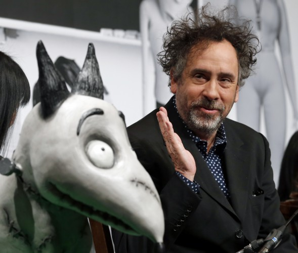

Тимоти Уолтер Бертон, более известный нам как режиссер и мультипликатор Тим Бертон, появился на свет в августе 1958 года в калифорнийском городке Бербанк. У него было не очень радужное детство, но именно эти годы и оставили решающий отпечаток на творчестве Бертона, привнеся в него черный юмор и макабрические элементы.
В, казалось бы, благополучной семье Бертонов, где, кроме Тима, подрастал младший сын, а родители имели неплохой стабильный заработок, мальчик был одинок и обособлен. Он не любил шумных компаний. Время проводил в своей комнате, где почему-то были замурованы и превращены в узкие щели окна. Тимоти читал Эдгара Аллана По и посещал кинотеатр, где смотрел преимущественно фантастику и «ужастики».
Неподалеку от дома Бертонов было муниципальное кладбище. Кроме него, по соседству с жилищем Тима располагались офисы киностудий «Уолт Дисней», «Коламбия пикчерз» и «Уорнер бразерс». Можно сказать, это и была аллегорическая «картинка» всего дальнейшего творчества режиссера, создавшего «Эдварда Руки-ножницы».
В 1976 году Тим Бертон покинул неуютный городок и отправился в Санта-Клариту – калифорнийский город, где располагался институт искусств, основанный Уолтом Диснеем. Здесь будущий режиссер и мультипликатор постигал азы и тонкости профессии.
В 1979 году Бертона приняли в студию «Дисней», где он несколько лет работал аниматором и дизайнером мультипликационных персонажей.
